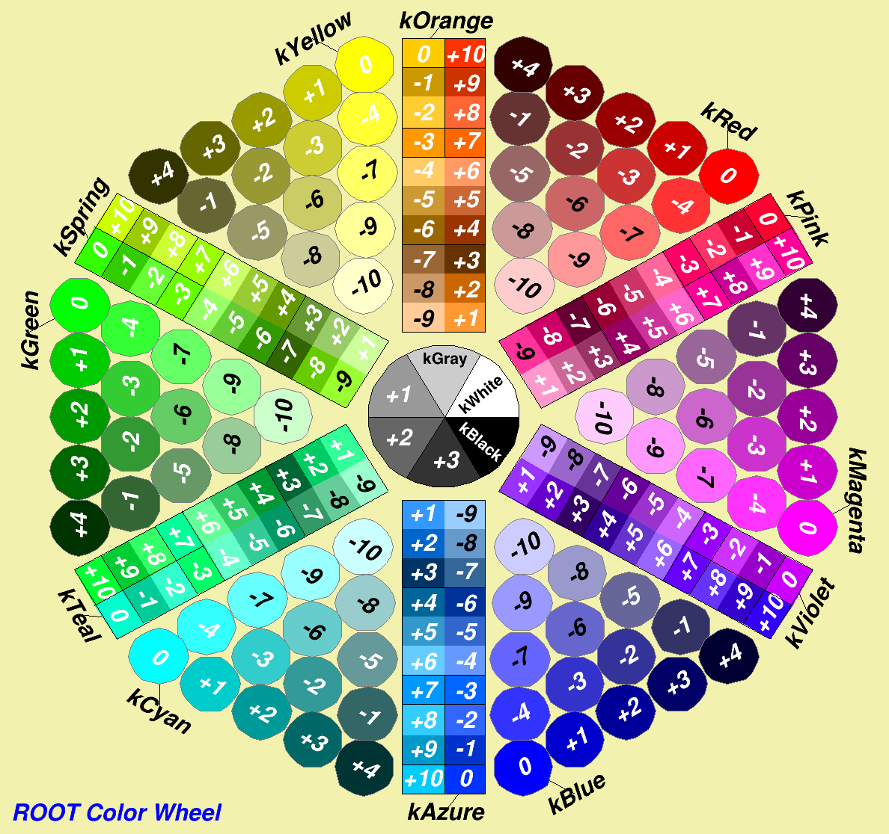
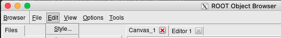

ブラウザでROOTファイルを開く（こっちの方が操作性がよく綺麗）
https://root.cern/js/latest/に飛ぶ． リンクに飛んだら下の画面の"..."の部分を開き，自分の読み込ませたいroot fileを選択する． （MonALISAを使っている人にはおなじみかもしれません）
ヒストグラム
ヒストグラム作成
TH1F *h1D = new TH1F("name","title", nBins, minX, maxX) ("name","title", nBins, minX, maxX); //char, char, int, float
xbin にwの重み付けfill
h1D->Fill(x,w);詳しい色や形状、引数等はひとまず参照をみてください.
TH2F *h2D = new TH2F("name","title", nBinsX, minX, maxX, nBinsY, minY, maxY); //char, char, int, float, float, int, float, float
h2D->Fill(x,y);
平面プロットのカラー付棒が立っている奴は"lego2z"
h2D->Draw("colz");
//綺麗な虹色 kLainbowは薄汚い暗い虹色
gStyle->SetPalette(1);
配列オブジェクト (ヒストグラムに関わらずROOTのオブジェクトは配列化できるものが多い)
loopでhistNameが変わっていることが大切 (h%dの部分でloopの数字を名前に入れ，histごとに名前を変えている)
TH1F *hList[n];
for(int nHist = 0; nHist < n; nHist++) hList[nHist] = TH1F(Form("h%d", nHist),"", nBins[nHist], minX[nHist],maxX[nHist]);
多次元ヒストグラム( THnSparse )
オブジェクトのbin数は, (bin_axial1)*(bin_axial2)*(bin_axial3)* ...となっていくためサイズが大きくなり、注意が必要.~下は4次元の例: nbinsEachHistは各hist(各軸)のbin数, minEachHist各hist(各軸)のmin値, maxEachHist各hist(各軸)のmax値~
Fillも配列で突っ込む~
Int_t nbinsEachHist[4] = {100, 2, 30, 50};
Double_t minEachHist[4] = {0,-0.5, -0.3, 0};
Double_t maxEachHist[4] = {50,1.5, 5.0, 100};
THnSparse* hN = new THnSparseD("histname", "title", 4, nbinsEachHist, minEachHist, maxEachHist);
hN->Sumw2();//error bar
Double_t xN[4] = {11, 1.2, -0.1, 40};
hN->Fill(xN, 1.);
hN->GetAxis(3)->SetRangeUser(zMin[nZRange], zMax[nZRange]);
h1 = hN->Projection(0, "h1 Name");
h2 = hN->Projection(1, 4, "h1 Name");
ヒストグラムのコピー (当然だがポインタは新しくできるため、心配せずヒストグラムを編集できる)
TH1F *hnew = (TH1F*)h->Clone(); hnew->SetName("hnew");
不均一bin幅
double xBinsW[] = {0,4,5,10};
TH1F *h = new TH1F("hist","",3,xBinsW);
h->Scale(1., "width");
ヒストグラムの演算
hist->Add(h1,x);//各binの値=現在の値+x*h1の値 hist->Add(h1,h2,x,y);//各binの値=x*h1の値+y*h2の値 hist->Divide(h1,x);//各binの値=現在の値/(x*h1の値) hist->Divide(h1,h2,x,y);//各binの値=(x*h1の値)/(y*h2の値) hist->Multiply(h1,x);//各binの値=現在の値*x*h1の値 hist->Multiply(h1,h2,x,y);//各binの値=x*h1の値*y*h2の値 hist->Scale(x);//各binの値=x*現在の値 Double_t tot=h1->Integral(); //面積で規格化 h1->Scale(1. /tot);
Efficiency
h->Divide(hNume, hDeno, 1.0, 1.0, "b") //efficiencyのerrorはバイナリであるため注意(option "b")
TEfficiency *heff = new TEfficiency(hNume, hDeno); //値が1を超える場合は計算できない
heff->Draw("AP"); //点と軸表示
Bin
//get a number of bin for the axis value.
//take care the number of bin starts 1 not 0
h->FindBin(val);
h->FindFixBin(val);
h->GetBinContent(binNumber); //get the entry of the certain bin
Double_t xCenterValue = h1->GetXaxis()->GetBinCenter(i); //binのxの中心値を取得
h->Rebin(n) //n binを1 binにまとめる。 bin数は1/nになる
double xBinsW[] = {0,4,5,10};
TH1F *h_rebin = hist->Rebin(4,"h_rebin",xBinsW); //recreate the bin width you want to set
ブランチの中身の確認
f = ROOT.TFile("hoge.root", "READ")
branch = f.findObject("branchName")
for key in branch:
name = key.GetName()
print(name)
軸
軸情報へのアクセス
h->GetXaxis(); //X, Y, Z
h->GetAxis(3); //multi demension
h->GetXaxis()->SetRange(IBinNum, EBinNum);//bin番号を引数にする
h->GetXaxis()->SetRangeUser(IVal, EVal);//user座標を引数にする
//文字は#を使うとLaTeX表記できる ex) #it{p}_{T}, #alpha, #frac{1}{N}
//スライドで後から誤魔化す場合はHelveticaで書くといいらしい... 少し違う気もしますが
h->SetTitle("hTitle"); //ヒストグラムのタイトル
h->GetXaxis()->SetTitle("title_of_xaxis"); // 1次元ヒストグラム以外の場合
gPad->SetLogy(); //y軸をlog
//Axis labeling: Take care for the number start from 1 not 0
h->GetXaxis()->SetBinLabel(1,"A");
h->GetXaxis()->SetBinLabel(2,"B");
h->GetXaxis()->SetBinLabel(3,"C");
h->GetXaxis()->SetBinLabel(4,"D");
h->GetYaxis()->SetTitleSize(25);
h->GetYaxis()->SetTitleFont(43);
h->GetYaxis()->SetTitleOffset(1.55);
histogramのbin情報のスキャン
for bin in range(1, h.GetNbinsX() + 1): error = h.GetBinError(bin) content = h.GetBinContent(bin)グラフ中に線を引くTLine
TH1D* h1 = new TH1D("h1", "h1", 200, -50, 150);
TLine* l1 = new TLine(0,0.2, 0, 1.5);
TLine* l2 = new TLine(-40, 0.5, 200, 0.5);
h1->Draw();
l1->Draw();
l2->Draw("same");
厄介なのが線の定義がグラフの定義の範囲を超えると線がそのまま突き抜ける．
１次元のヒストグラムの場合縦軸の範囲が非常に難しい.
C++の文字の扱い
int intX = (int) floatX; //float->int\nは改行;
leg->AddEntry(h3[i],cid,"l");%3dは3文字幅を指定。%02dで08などと頭にゼロをつけてくれる。~
文字は%sで受けlongは%ldで。
Form("x = %d", x); // the value of x into %d as string
char src[100] = "10 123.456 ABC";
int i;
float f;
char s[100];
sscanf( src, "%d %f %s", &i, &f, &s ); //char to value
std::cout << src << " --(sscanf)---> "<< i <<" "<< f <<" "<< s << std::endl; // result 10 123.456 ABC --(sscanf)---> 10 123.456 ABC
canvas / legend
TCanvas *c1 = new TCanvas("name","title",width,height);
canvas->Divide(n,m); //n行,m列にcanvasを分割する
canvas->cd(i); //i番目の区画に移動する
hList[i]->Draw();
//TLegend(x1,y1,x2,y2,"title")、位置はNDCで指定する（０−１の間の値）
//最後の引数の"title"はlegendに表示にされるタイトル、邪魔な場合はいれなくてもいい
TLegend *leg = new TLegend(0.1,0.7,0.48,0.9);
//第一引数はポインタ、第二引数は項目名、第三引数で表示したいattributeを指定
leg->AddEntry(h,"histogram","f");
leg->Draw();
関数
関数作成
TF1 ff = new TF1("ff", "ff", "(x<10)*(a + b * x) + (x>10)*c", 0, 100); //範囲指定のfitting ex: (x<10)linear, (x >10) constant
TF1 ff = new TF1("ff", "ff", "(x<10)*([0] + [1]*x) + (x>10)*[2]", 0, 100); //範囲指定のfitting ex: (x<10)linear, (x >10) constant
フィット
ff->SetParameter(0, a); //[0]にaを代入する
ff->SetParameters(a, b, c); //[0]にa, [1]にb, [2]にcをいっぺんに代入する
h->Fit("ff", "", "", 5.0, 100.0);
Double_t p0 = ff->GetParameter(0);//0番目のパラメータ
Double_t p0e = ff->GetParError(0);//0番目のパラメータのエラー
Double_t chi2 = ff->GetChisquare();//χ二乗値
Int_t Ndof = ff->GetNDF();//自由度の数（フィット点の数 - パラメータ数）
Double_t retunVal = ff->Eval(1.0); //the ff value at x=1
ヒストグラムのフィッティング
オプション
TH1::Fitの第２引数は下に引用したフィッティングのオプション、第３引数はTH1::Drawのグラフィックオプションである。- "W" 空でないすべての階級に1の重みを設定する。ここではエラーバーは無視する
- "WW" 空の階級も含めてすべての階級に1の重みを設定する。エラーバーは無視する
- "I" 階級の中央の値を使用する代わりに、関数の積分値を使用する
- "L" 対数尤度メソッドを使用する （既定では、カイ2乗を使用する）
- "U" ユーザの指定するフィッティングアルゴリズムを使用する
- "Q" 静穏モード（最低限の表示のモード）
- "V" 冗長モード（既定のモードはQとVの間である）
- "E" Minos の技術を使用してより良いエラー推定を行う
- "M" フィッティングの結果を改良する
- "R" 関数レンジで指定される値域を使用する
- "N" グラフィック関数を保存しない、表示をしない
- "0" フィッティングの結果を表示しない。既定の設定では、先述の"N"が指定されなければ、フィッティングされた関数が表示される。
- "+" フィッティングされた関数のリストに、新しいフィッティングされた関数を追加する （既定では、最新の関数のみが保持されて、それ以前のものは消去される）
- "B" 1つ以上のパラメータを修正したくて、フィッティング関数が、polN、expo 、landau、 gausと同じようであれば、このオプションを使用する。
- "LL" とても統計量が低くて、内容が整数ではない場合のために改良した、対数尤度によるフィッティング。ビンの内容が（100よりも）大きければ、このオプションは使用しない。
- "C" 線形のフィッティングの場合は、カイ二乗を計算しない（時間の節約である）。
- "F" polNでフィッティングを行う場合、Minuitフィッターに切り替える。（既定の設定では、polN関数は線形フィッターでフィッティングされる）
プロットの見た目
h->SetLineColor(1); h->SetMarkerColor(1); h->SetMarkerStyle(22); h->SetMarkerSize(1.5); d->SetLineWidth(5); d->SetLineStyle(2); //[1=line,2=broken,3=dotted,4=broken-dot,5=long-broken-dot] h->SetFillColorAlpha(kGreen, 0.5); //kGreen, 50% Clear h->SetFillStyle(3005);
RooT Color
%CODE{ lang="cpp" num="1" numstep="1"
enum EColor { kWhite =0, kBlack =1, kGray=920, kRed =632, kGreen =416, kBlue=600, kYellow=400, kMagenta=616, kCyan=432, kOrange=800, kSpring=820, kTeal=840, kAzure =860, kViolet =880, kPink=900 };

カラー/マーカーを配列にしとくと便利かも. 既定のカラー(EColor変数:kRedなど)は下にあるように元々は値が入っている。この値を図を参照に+/-して色を決めておく.
//[kBrack, kRed, kBlue, kGreen+3, kOrange+8, kAzure+10, kSpring+4, kViolet+1, kPink+9, kSpring-9, kOrange+8, kAzure+1, kTeal+4] int lFillColor[14] = [1, 632, 600, 416+3, 800+8, 860+10, 900+10, 820+4, 880+1, 900+9, 820-9, 800+1, 860+1, 840+4]; int [MarkerStyleList][MarkerStyleList] [10] = [20, 21, 22, 23, 34, 29, 33, 31, 24, 24, 26, 32]; hList[histNum]->SetMarkerColor( [FillColorList][FillColorList].at(histNum)); hList[histNum]->SetMarkerStyle( [MarkerStyleList][MarkerStyleList].at(histNum));
ROOT file I/O
TFile *file = new TFile("hoge.root","option"); //option : READ, UPDATE, NEW/CREATE, RECREATE
TH1F* h = (TH1F*)file->Get("hist");//Getで得られるのはTObject型なのでキャストしている。
TH1F *h = (TH1F*)gROOT->FindObject("hist");
obj->SaveAs("hoge.root");
obj->Write();
file->Write();
TTree
TTree Read
TFile *file = new TFile("file.root","recreate"); //create root file
TTree *tree = new TTree("objectName","titleName");
Int_t a;
Double_t b;
tree->Branch("val1", &a);
tree->Branch("val2", &b);
//Event loot #######
a = 3; b = 1.22;
tree->Fill();
a = 1; b = 2.4; c=1.33;
tree->Fill();
//Event loot #######
tree->Write();
TTree Creation
TFile *file = new TFile("hoge.root","recreate"); //TTree?????root?????????????
TTree *tree = new TTree("tree","tree");
Branch Creation
Int_t a; //Branchに間接的に値を代入するための変数をあらかじめ宣言する (tempraly variable)
Double_t b;
tree->Branch("val1", &a);
tree->Branch("val2", &b);
TList/TObject
TList *l = new TList();
l->Add(obj);
l->At(num); //return TObject*
l->FindObject("name");
l->Write("name",1);
よく見るプロット(gap なし/あり)
- 横割りRatioプロット(macroなのでratioPlot.Cを作り中身を貼り付ければ, root ratioPlot.Cで走ります): [[ratioPlot.C][ratioPlot.C]]
- Error Band Plot Macro : error band example code
- double Fit Function to sub background: Macro estimateBackground.C
root fileを読み込み解析する (Make Class)
自分で解析コードを書いた方が早い方はいらないですが，
初めの内はrootのMakeClassを使うと便利だと思います．
1) 解析対象のroot fileを一度rootで開く
root -l hoge.root
2) tree名を確認する.
.ls()
3) 解析対象としたいtree(ex. hogeTree)に対しMakeClassを行う
hogeTree->MakeClass("hogeOutput");
4) rootを抜け出してみるとroot fileを開いたディレクトリに
hogeOutput.CとhogeOutput.hが出来上がっているはず.
5) hogeOutput.hにhoge.root内の変数，オブジェクト名等が定義されているため，
hogeOutput.CのLoop()内にそれらの変数を用いて解析コードを書き加えていく. その後の解析
In a ROOT session, you can do:
root> .L anaMain.C
root> anaMain t
root> t.GetEntry(12); // Fill t data members with entry number 12
root> t.Show(); // Show values of entry 12
root> t.Show(16); // Read and show values of entry 16
root> t.Loop(); // Loop on all entries
root> tree->Draw("valX", "valY > 10 && valZ < 20");
root> tree->Draw("valX:valY", "event = 1", "colz"); //2D hist, cut: event 2, opt = colz
対話形式で動かす際に，上記の方法でDrawをすると扱いづらいbin幅になるので， 詳しくみたい場合には自身で先にヒストグラムを作り， 下記の第一引数のような形で引数>>ヒストグラムのように書くと良い.
TH2F *h = new TH2F("h", "h", 100, 0, 100, 100, 0, 100);
eventTree->Draw("x:y>>h", "layer==1&&z<10", "colz");
Scanで各変数の中身を確認することができる．第一引数をダブルクォーテーションで囲い， 各変数をコロンで分けることで，複数の変数を表示することができる． 第二引数は条件．
root> eventTree->Scan("iEvent:row:col:layer:depEn:particleNumber:pdgCode","col<100&&row<100")
************************************************************************************************
* Row * iEvent * row * col * layer * depEn * particleN * pdgCode *
************************************************************************************************
* 0 * 0 * 75 * 30 * 0 * 68654.726 * 85 * 22 *
* 1 * 0 * 75 * 30 * 0 * 79663.421 * 85 * 22 *
* 2 * 0 * 75 * 30 * 0 * 38548.171 * 85 * 22 *
* 3 * 0 * 75 * 30 * 0 * 50277.410 * 85 * 22 *
これらのコードはマクロようなので，コンパイルして動かすには少し"include"や"define"などの部分をCとhで書き換える必要がある．
書き換えたファイル( ,
Algorithm.cc )
とcompileすべきmain関数を含んだファイルcompile.Cを添付する.
(二つの異なるroot fileから読み出す場合(entryが一致している必要がある),
AlgorithmTwoFile.cc,
AlgorithmTwoFile.h,
compileTwoFile.Cを参照のこと.)
またrootのコードをコンパイルすためにはg++は以下のオプションがいる．
$ g++ $1 -o Run `root-config --cflags --libs` $ ./Run自分はオプションを覚えていられないので，以下を.zshrcに貼り, rpp compile.Cでコンパイルから実行までを行なっている．
function rpp(){
g++ $1 -o Run `root-config --cflags --libs` && ./Run
}
カテゴリはわかんないけどひとまず
その内載せたいもの
hadd, TCanvas(分割), TLegend, TROOT, FindObject, TChain, MakeClass, ファイルの読み出し/書き出し, Errobar,
fitParameterの取り出し, etc...
TDatabasePDG
TDatabasePDG *pdg = new TDatabasePDG(); TParticlePDG *particle = pdg->GetParticle(id); //pdgIdについてはhttp://pdg.lbl.gov/2004/reviews/montecarlorpp.pdf particle->GetName(); particle->Mass(); particle->Spin(); particle->Lifetime();
便利なGUI
グラフのいろんなところを右クリックで色々いじれます。(以下の画像はhttps://atlas.kek.jp/comp/ROOT-commands.htmlから拝借)

-''View Tab->Editor'': 一番使う
binの設定rebinしたり、グラフの色を変えたり、軸の名前を変えたり、三次元を二次元に投影したり色々できる。
"Vie"Tabの"Editor"を押すと左の"Files"タブの隣に"Pad Editor"タブができている。
ここをクリック後、グラフのポイントやバーをクリックすると色や大きさが変えられる。
軸をクリックすれば軸の設定等ができ、クリックした場所の設定変更がGUIで行える。
時間がない時は有効!
-''Edit Tab->Style Tab'':Editorより詳細な設定ができる
大抵Editorでできるため使用頻度は少ない。
Editorでやりたいことができなかった時開いてみてください。
-''Tools Tab->Fit Panel'': フィットが簡単にできる
既存の関数でfitしたり、ここで関数を作ってfitすることもできる。
フィットパラメータはterminal上に表示される。
Panel下のbarをいじるとフィット範囲も指定できる。
一番上の場所でフィットするヒストグラムを指定.
-''一部のオブジェクトだけをrootファイルとして保存''
左のオブジェクトを右クリックすると"SaveAs"とあるので, そこをクリックし名前を決めていろんな拡張子で保存できる。
一部のオブジェクト(ヒストグラム等)だけでいい場合や、GUIで編集したhistogramを保存したい場合は便利。